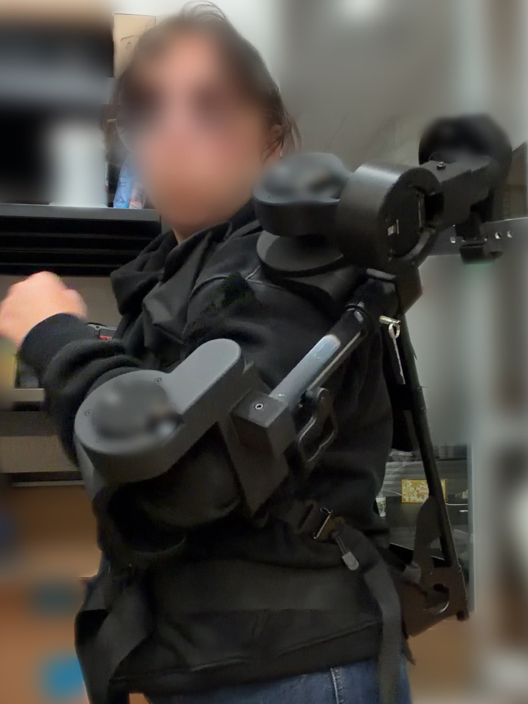
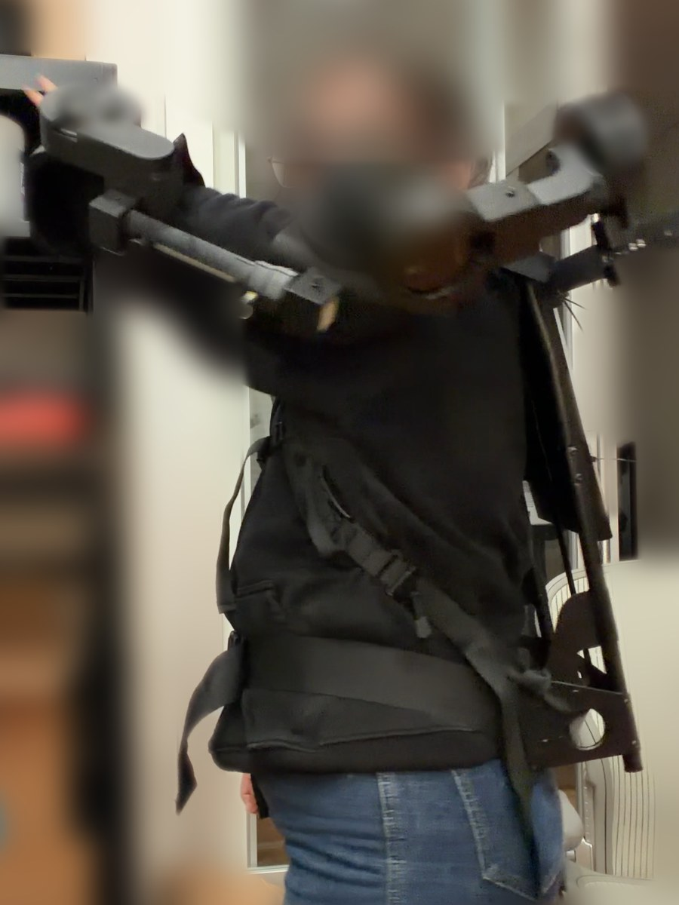
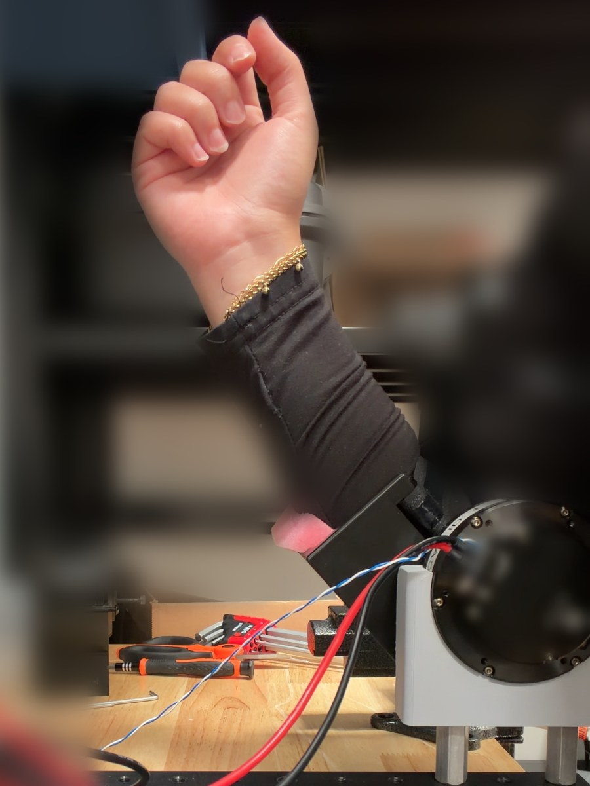

Upper-Body Force-Feedback Exoskeleton



What
A wearable upper-body exoskeleton for teleoperating a humanoid robot. It feeds the robot's contact forces back to the operator's arms for more accurate control, and must adjust to fit individual users.
How
- Researched exoskeleton designs and actuation methods: pulley systems, rotary, linear and pneumatic
- Rapid-prototyped shoulder motor layouts with bearings and 3D-printed parts to find one that works
- Validated designs in MuJoCo before printing and testing them in real life
- Ran user tests on an elbow-motor fixture (CAN bus) to set the motor requirements
- Owned mechanical, electrical and firmware design; built and wore the first arm
Lessons so far
- Reference papers with proven results for what you're trying to achieve
- Nail down requirements early and map them to technical specs to prioritize trade-offs
- Test with people before choosing hardware
- Force changes are felt relative to the force already applied
- For a wearable, fit matters as much as performance
This project is ongoing as my final-year design project. I'll update this section through the term.